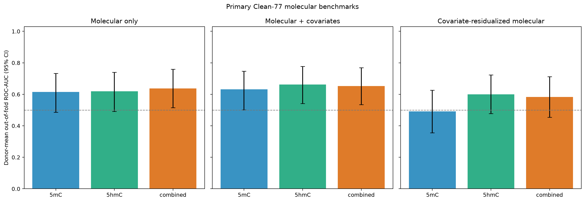
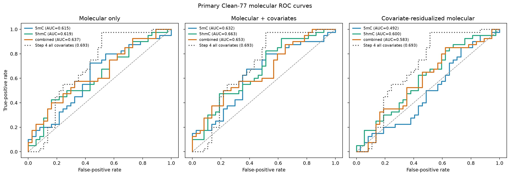
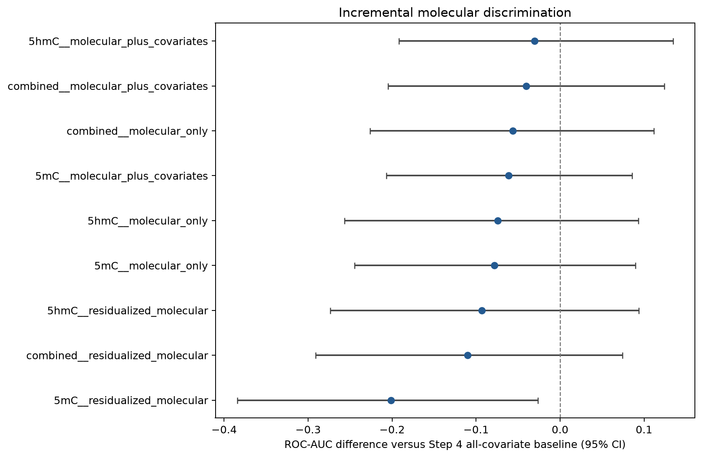
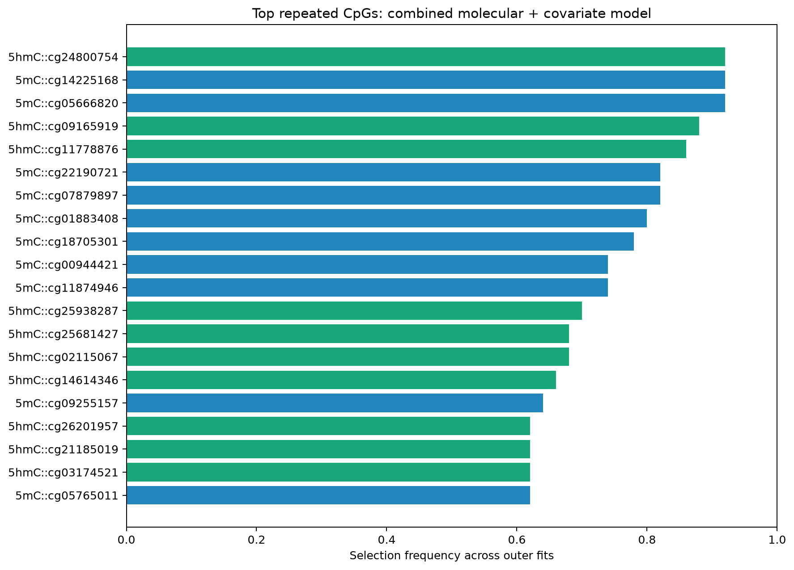

Leakage guardrail: outer-test donors did not contribute to variance pools, missingness rules, imputation, scaling, supervised CpG selection, residualization, or tuning.
Interpretation: this report estimates prediction, not causality. CpGs require stability and biological annotation before being described as signatures.
Three modalities × three model views; frozen 5×10 outer CV and four inner folds. Combined models select the stated feature count separately from each modality.
| modality | view | roc_auc_donor_mean_oof | roc_auc_bootstrap_low | roc_auc_bootstrap_high | pr_auc_donor_mean_oof | balanced_accuracy_donor_mean_oof | mcc_donor_mean_oof |
|---|---|---|---|---|---|---|---|
| 5hmC | molecular_only | 0.6189 | 0.4918 | 0.7399 | 0.6405 | 0.5578 | 0.1155 |
| 5mC | molecular_only | 0.6149 | 0.4858 | 0.7331 | 0.6489 | 0.6193 | 0.2444 |
| combined | molecular_only | 0.6372 | 0.5155 | 0.7595 | 0.6802 | 0.5443 | 0.0886 |
| 5hmC | molecular_plus_covariates | 0.6628 | 0.5412 | 0.7777 | 0.6773 | 0.5713 | 0.1425 |
| 5mC | molecular_plus_covariates | 0.6318 | 0.5007 | 0.7473 | 0.6701 | 0.6318 | 0.2717 |
| combined | molecular_plus_covariates | 0.6527 | 0.5345 | 0.7696 | 0.6941 | 0.5983 | 0.1966 |
| 5hmC | residualized_molecular | 0.6000 | 0.4777 | 0.7237 | 0.6207 | 0.5463 | 0.0926 |
| 5mC | residualized_molecular | 0.4919 | 0.3560 | 0.6264 | 0.5230 | 0.4818 | -0.0365 |
| combined | residualized_molecular | 0.5831 | 0.4541 | 0.7122 | 0.5657 | 0.5463 | 0.0926 |


| comparison_family | model_a | model_b | roc_auc_difference_a_minus_b | bootstrap_low | bootstrap_high | bootstrap_two_sided_p | bootstrap_iterations | fdr_bh_within_family |
|---|---|---|---|---|---|---|---|---|
| molecular_vs_covariate_baseline | 5hmC__molecular_only | all_covariates | -0.0743 | -0.2568 | 0.0933 | 0.4028 | 2000 | 0.6042 |
| molecular_vs_covariate_baseline | 5hmC__molecular_plus_covariates | all_covariates | -0.0304 | -0.1919 | 0.1345 | 0.7176 | 2000 | 0.7176 |
| molecular_vs_covariate_baseline | 5hmC__residualized_molecular | all_covariates | -0.0932 | -0.2736 | 0.0940 | 0.3588 | 2000 | 0.6042 |
| molecular_vs_covariate_baseline | 5mC__molecular_only | all_covariates | -0.0784 | -0.2446 | 0.0899 | 0.3798 | 2000 | 0.6042 |
| molecular_vs_covariate_baseline | 5mC__molecular_plus_covariates | all_covariates | -0.0615 | -0.2068 | 0.0858 | 0.4718 | 2000 | 0.6066 |
| molecular_vs_covariate_baseline | 5mC__residualized_molecular | all_covariates | -0.2014 | -0.3845 | -0.0263 | 0.0270 | 2000 | 0.2429 |
| molecular_vs_covariate_baseline | combined__molecular_only | all_covariates | -0.0561 | -0.2264 | 0.1115 | 0.5167 | 2000 | 0.6094 |
| molecular_vs_covariate_baseline | combined__molecular_plus_covariates | all_covariates | -0.0405 | -0.2047 | 0.1243 | 0.6637 | 2000 | 0.7027 |
| molecular_vs_covariate_baseline | combined__residualized_molecular | all_covariates | -0.1101 | -0.2912 | 0.0743 | 0.2349 | 2000 | 0.6042 |

| modality | view | feature_name | selected_outer_fits | selection_frequency | coefficient_mean_when_selected | positive_coefficient_fraction |
|---|---|---|---|---|---|---|
| combined | residualized_molecular | 5hmC::cg25938287 | 50 | 1.0000 | 0.2373 | 1.0000 |
| 5hmC | residualized_molecular | 5hmC::cg25938287 | 49 | 0.9800 | 0.3497 | 1.0000 |
| combined | residualized_molecular | 5mC::cg14225168 | 47 | 0.9400 | 0.2191 | 0.9362 |
| 5hmC | molecular_plus_covariates | 5hmC::cg24800754 | 47 | 0.9400 | -0.1906 | 0.0638 |
| 5hmC | molecular_only | 5hmC::cg24800754 | 47 | 0.9400 | -0.1986 | 0.0638 |
| combined | molecular_only | 5mC::cg05666820 | 46 | 0.9200 | -0.0696 | 0.0870 |
| combined | molecular_plus_covariates | 5mC::cg14225168 | 46 | 0.9200 | 0.1727 | 1.0000 |
| combined | molecular_plus_covariates | 5mC::cg05666820 | 46 | 0.9200 | -0.0504 | 0.1304 |
| 5mC | molecular_plus_covariates | 5mC::cg05666820 | 46 | 0.9200 | -0.0730 | 0.1957 |
| 5mC | molecular_only | 5mC::cg05666820 | 46 | 0.9200 | -0.1492 | 0.1087 |
| 5mC | residualized_molecular | 5mC::cg11874946 | 46 | 0.9200 | 0.4483 | 0.9130 |
| combined | molecular_only | 5hmC::cg24800754 | 46 | 0.9200 | -0.1034 | 0.0217 |
| 5mC | molecular_plus_covariates | 5mC::cg14225168 | 46 | 0.9200 | 0.4432 | 1.0000 |
| combined | molecular_plus_covariates | 5hmC::cg24800754 | 46 | 0.9200 | -0.1012 | 0.0217 |
| combined | molecular_only | 5mC::cg14225168 | 46 | 0.9200 | 0.1890 | 1.0000 |
| 5mC | molecular_only | 5mC::cg14225168 | 46 | 0.9200 | 0.4522 | 0.9783 |
| 5mC | residualized_molecular | 5mC::cg14225168 | 45 | 0.9000 | 0.3485 | 0.8667 |
| combined | residualized_molecular | 5mC::cg11874946 | 45 | 0.9000 | 0.2323 | 0.9778 |
| 5hmC | molecular_only | 5hmC::cg09165919 | 44 | 0.8800 | -0.6794 | 0.0000 |
| 5hmC | molecular_plus_covariates | 5hmC::cg09165919 | 44 | 0.8800 | -0.5630 | 0.0000 |
| combined | residualized_molecular | 5hmC::cg15017939 | 44 | 0.8800 | 0.2002 | 1.0000 |
| combined | molecular_plus_covariates | 5hmC::cg09165919 | 44 | 0.8800 | -0.3498 | 0.0000 |
| 5hmC | molecular_only | 5hmC::cg11778876 | 44 | 0.8800 | 0.3949 | 1.0000 |
| combined | molecular_only | 5hmC::cg09165919 | 44 | 0.8800 | -0.3703 | 0.0000 |
| 5hmC | molecular_plus_covariates | 5hmC::cg11778876 | 43 | 0.8600 | 0.3778 | 0.9767 |
| 5mC | molecular_plus_covariates | 5mC::cg07879897 | 43 | 0.8600 | 0.6377 | 1.0000 |
| combined | molecular_only | 5mC::cg22190721 | 43 | 0.8600 | -0.1038 | 0.0233 |
| combined | molecular_only | 5hmC::cg11778876 | 43 | 0.8600 | 0.2569 | 1.0000 |
| 5hmC | residualized_molecular | 5hmC::cg15017939 | 43 | 0.8600 | 0.2462 | 0.9535 |
| 5mC | residualized_molecular | 5mC::cg07879897 | 43 | 0.8600 | 0.6556 | 1.0000 |

Only after reviewing paired uncertainty and stability should one workflow be locked for Full-78 sensitivity analysis. Do not select a single lucky repeat or outer fold.